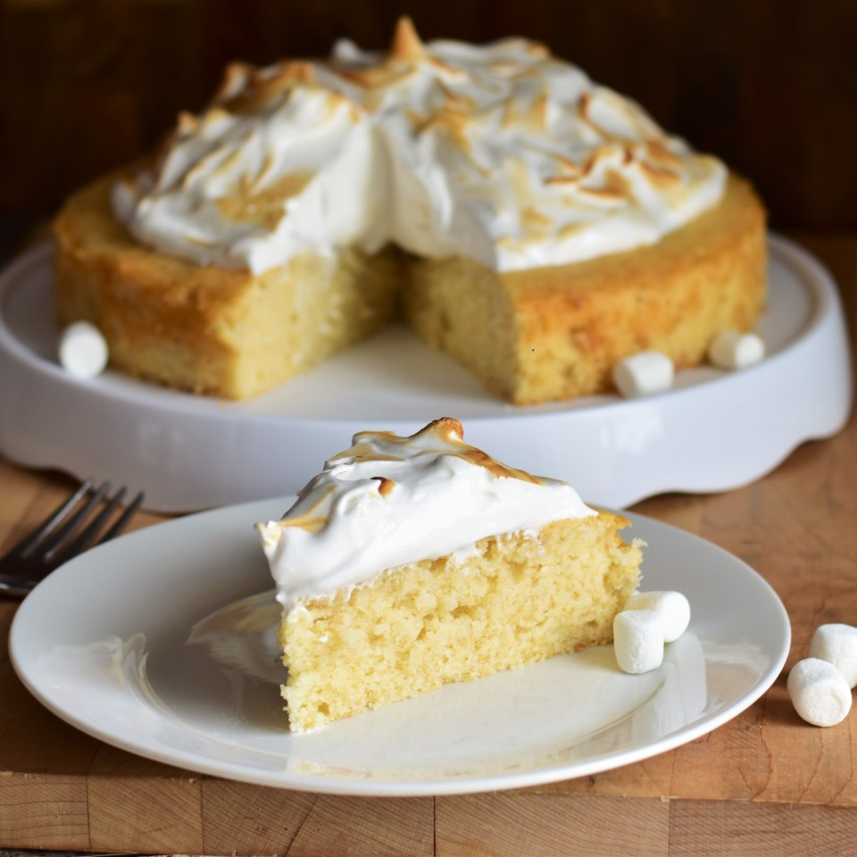

Toasted Marshmallow Cake

Description
A simple but elegant toasted marshmallow cake, with either a toasted marshmallow frosting or a chocolate ganache frosting.
Ingredients
- 1 cup mini marshmallows
- 1 2/3 cups all-purpose flour
- 1 1/2 teaspoons baking powder
- 1/2 teaspoon salt
- 1/2 cup unsalted butter, softened
- 1 tablespoon vegetable oil
- 1/2 cup white sugar
- 3 tablespoons marshmallow creme
- 3 large egg whites, at room temperature
- 1 teaspoon vanilla extract
- 1/4 teaspoon almond extract
- 2/3 cup buttermilk
Steps
- Preheat the oven's broiler and place an oven rack a few inches below it. Line a baking sheet with parchment paper and lightly grease the parchment.
- Spread out mini marshmallows on the baking sheet in an even layer, and put under the broiler until browned and toasted, about 30 seconds. Remove from heat and allow to cool.
- Preheat the oven to 325 degrees F (165 degrees C) and place an oven rack in the middle of the oven. Line a 9-inch round cake pan with parchment paper and lightly grease it.
- Whisk together flour, baking powder, and salt in a small bowl.
- Cream together toasted mini marshmallows, butter, oil, sugar, and marshmallow crème in a large bowl with an electric mixer until thoroughly incorporated and smooth, 2 to 3 minutes. Beat in egg whites, 1 at a time, mixing well after each addition. Mix in vanilla and almond extracts. Stir in half of the flour mixture until just combined. Mix in buttermilk until just combined. Stir in remaining flour mixture until just combined.
- Pour batter into the prepared cake pan, and spread into an even layer.
- Bake in the preheated oven until the top springs back lightly when touched, 35 to 40 minutes. Allow cake to cool in the pan for 10 to 15 minutes before transferring to a wire rack to cool completely.
Back to menu